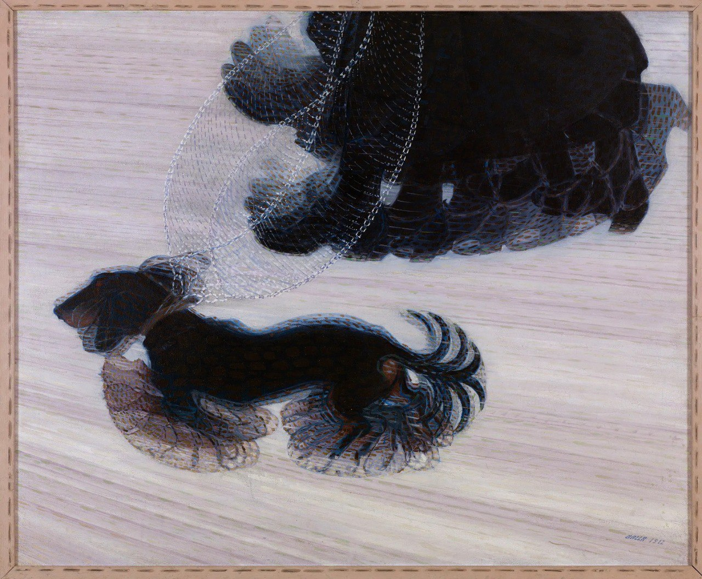
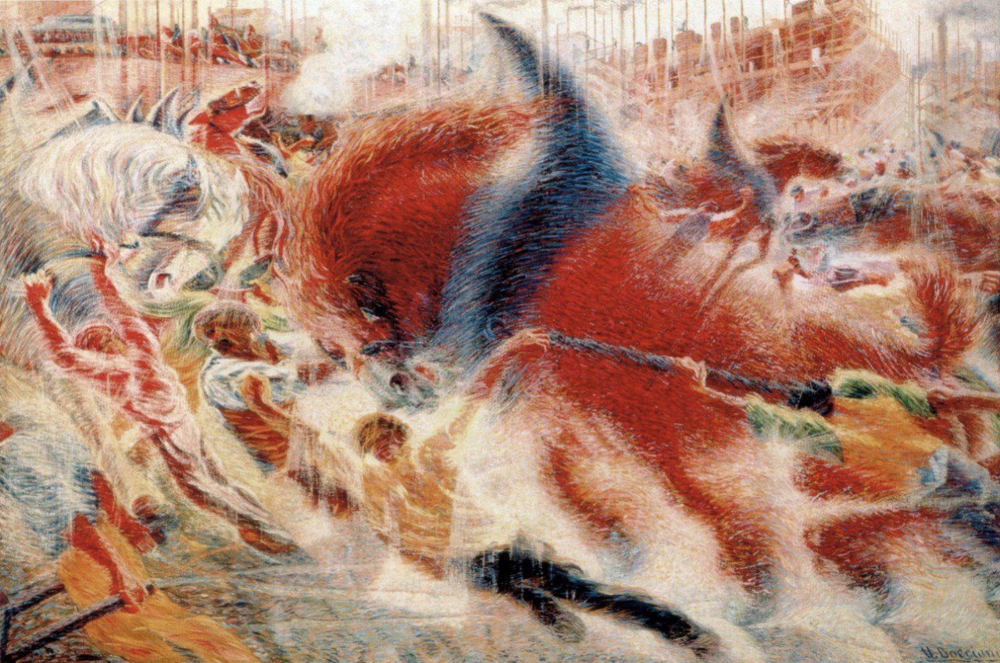
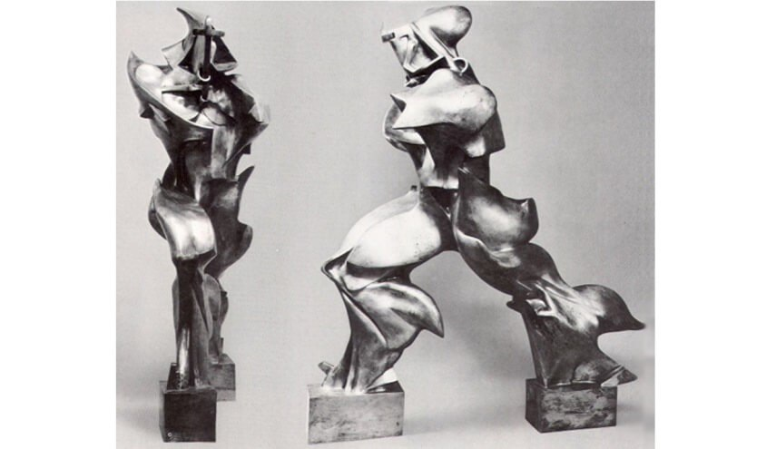
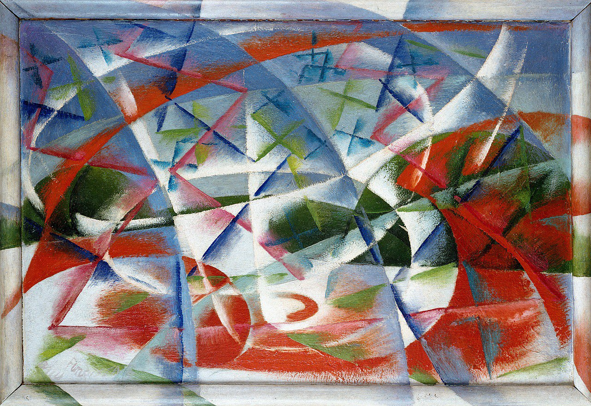
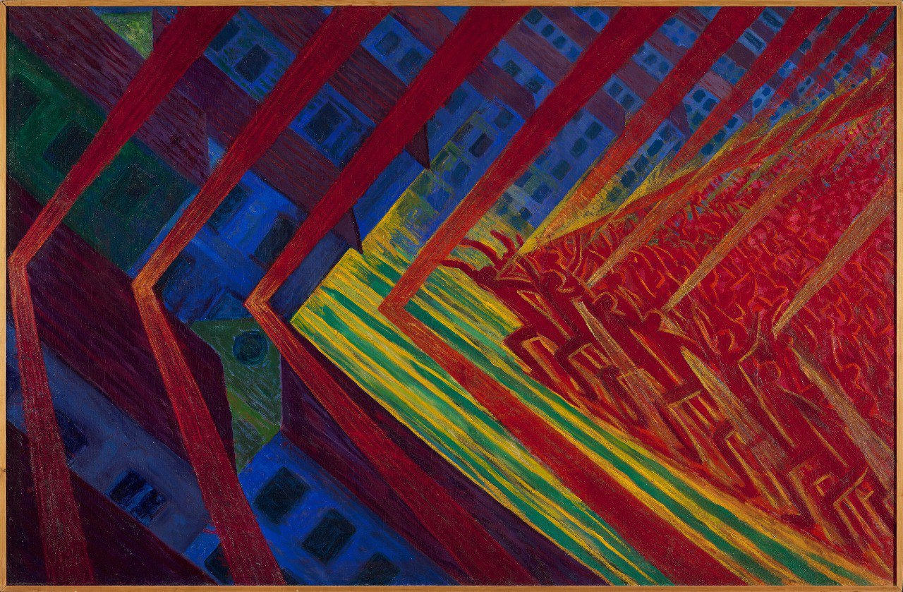
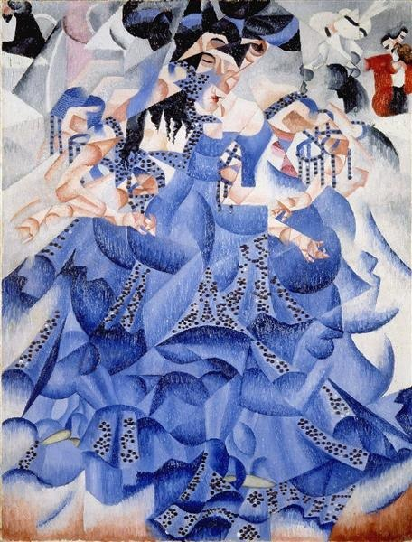
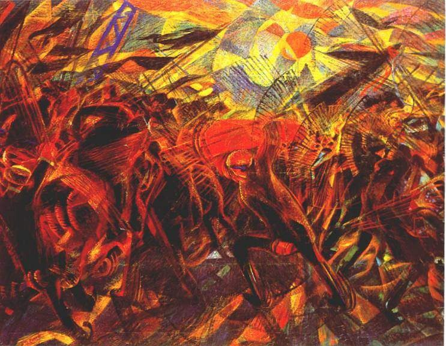
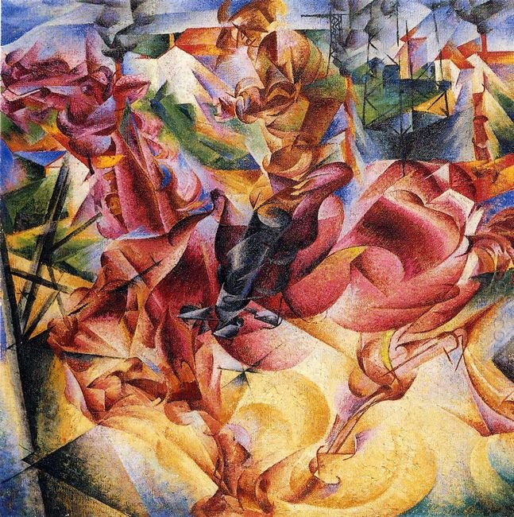
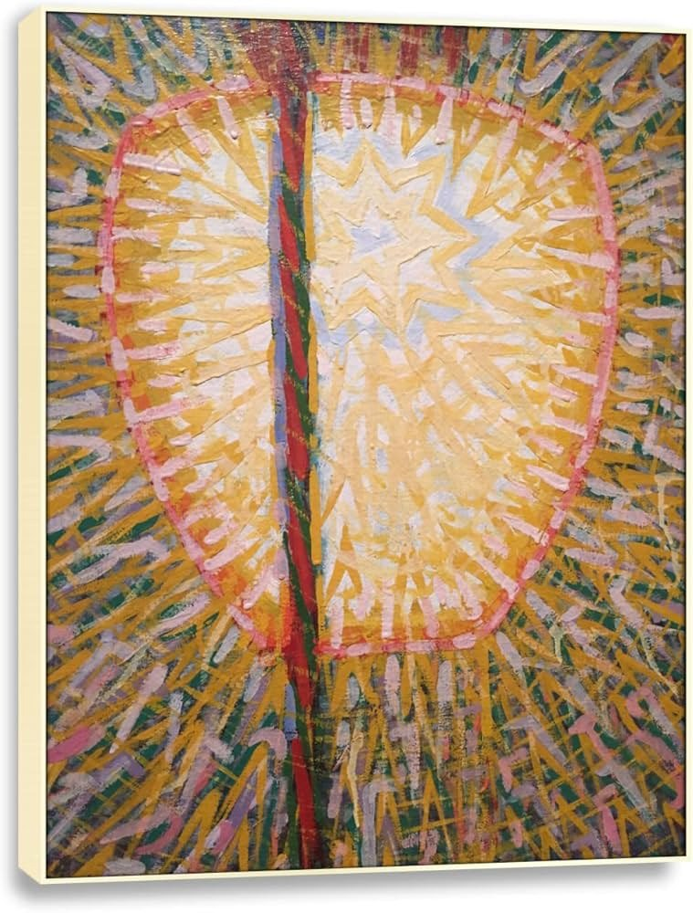
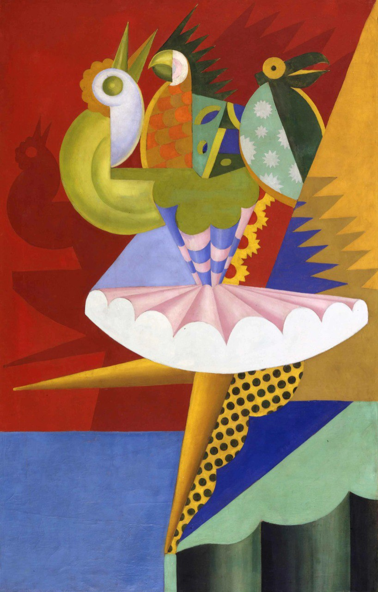

Meesterwerk: Dynamiek van een Hond
Giacomo Balla, 1912

⚜️ UITGEBREIDE STIJLFIGUREN
💨 DYNAMIEK & BEWEGING
Chronofotografie: Beweging opgebroken in sequenties, geïnspireerd door Muybridge en Marey.
Snelheid: Treinen, auto's, vliegtuigen - de moderne wereld in beweging.
🔗 Tijdsgeest Connecties
Historisch: Auto (Ford Model T 1908), vliegtuig (Wright 1903), trein - alles wordt sneller
Technologie: Telegraaf, radio, telefoon - informatie reist sneller dan mensen
Politiek: Marinetti's manifest (1909) viert snelheid als nieuwe god
🔨 FRAGMENTATIE
Objecten opgebroken: In dynamische facetten, beïnvloed door Kubisme.
Lijnen van kracht: Dynamische lijnen die beweging suggereren, energie visualiseren.
🔗 Tijdsgeest Connecties
Politiek: Fascisme - de oude wereld moet worden vernietigd
Filosofie: Nietzsche's "Alles wat recht is, liegt" - chaos en fragmentatie als waarheid
Wetenschap: Röntgenstralen (1895) - binnenkant zichtbaar, materie is niet solide
🔥 GEWELD & OORLOG
Glorificatie: Oorlog als "hygiëne van de wereld" - vernietiging als schepping.
Machine-esthetiek: De mens wordt machine, de machine wordt kunst.
🔗 Tijdsgeest Connecties
Politiek: Italiaans fascisme (Mussolini 1922) - Futuristen steunen de beweging
Historisch: Italiaans-Turkse Oorlog (1911), WO I (1914-1918) - technologie als wapen
Filosofie: Marinetti: "Wij willen oorlog verheerlijken - de enige hygiëne van de wereld"
🚗 TECHNOLOGIE & MODERNITEIT
De machine: Auto's, fabrieken, vliegtuigen als onderwerp én inspiratie.
Anti-verleden: Musea, bibliotheken, academies moeten worden vernietigd.
🔗 Tijdsgeest Connecties
Historisch: Industrialisatie van Italië - van agrarisch naar modern
Politiek: Anti-klerikaal - de kerk vertegenwoordigt het oude, trage Italië
Literatuur: "Woorden in vrijheid" - typografie breekt los, tekst wordt beeld
🎨 MEESTERWERKEN - GEDETAILLEERDE ANALYSE
1. "Dynamiek van een Hond aan de Lijn" (1912) — Giacomo Balla
Albright-Knox Art Gallery, Buffalo | 90 × 110 cm | Olieverf op doek
🔍 STIJLANALYSE
Beweging: De poten van de hond zijn meervoudig afgebeeld - als een film met meerdere frames in één beeld.
Chronofotografie: Beïnvloed door Muybridge's bewegingsstudies. De tijd wordt zichtbaar gemaakt.
Humor: Ondanks de serieuze theorie is dit ook een vrolijk, bijna komisch beeld.
Moderniteit: De hond als symbool van snelheid in de moderne stad - niet het paard, maar het kleine, snelle huisdier.
2. "The City Rises" (1910-1911) — Umberto Boccioni
Museum of Modern Art, New York | 200 × 300 cm | Olieverf op doek

🔍 STIJLANALYSE
Stad in beweging: De hele compositie beweegt. Paarden, mensen, gebouwen - alles is in flux.
Kleur: Warme, felle kleuren - rood, oranje, geel - als de energie van de moderne stad.
Lijnen: Diagonale, dynamische lijnen die beweging suggereren. Geen rustpunt.
Fascinatie: De stad als organisme, als machine, als belofte van de toekomst.
3. "Unieke Vormen van Continuïteit in de Ruimte" (1913) — Umberto Boccioni
Museu de Arte Contemporânea, São Paulo | 111 × 89 × 40 cm | Brons

🔍 STIJLANALYSE
Beweging in brons: Een lopend figuur, maar de vormen zijn uitgerekt, vervormd door snelheid.
Anti-klassiek: Geen rustig evenwicht maar dynamische spanning. De mens is geen standbeeld meer.
Ruimte: Het beeld opent zich naar de ruimte - geen gesloten vorm maar interactie met omgeving.
Iconisch: Dit beeld staat op de Italiaanse 20-cent munt - het symbool van modern Italië.
4. "Abstracte Snelheid + Geluid" (1913-1914) — Giacomo Balla
Università di Genova | Olieverf op paneel | 55 × 75 cm

🔍 STIJLANALYSE
Volledige abstractie: Geen herkenbaar object meer - pure snelheid als vorm.
Golven: De lucht wordt zichtbaar als trillingen - geluid als lijn.
Automobiel: Geïnspireerd door een raceauto die voorbij raast.
Progressie: Van representatie naar pure sensatie - de toekomst van kunst.
5. "De Opstand" (1911) — Luigi Russolo
Museo di Arte Moderna, Milaan | Olieverf op doek | 150 × 250 cm

🔍 STIJLANALYSE
Arbeiders: Een menigte die opstaat - sociale revolutie als thema.
Dynamiek: Diagonale compositie, stijgende lijnen - beweging omhoog.
Kleur: Rood, oranje, geel - de kleuren van vuur en passie.
Politiek: Russolo was ook componist van "lawaai-muziek" - kunst als agitatie.
6. "Blauwe Danseres" (1912) — Gino Severini
Museo del Novecento, Milaan | Olieverf op doek | 61 × 46 cm

🔍 STIJLANALYSE
Kubisme + Futurisme: Severini combineert Franse analyse met Italiaanse dynamiek.
Sequentiële beweging: De danseres is op meerdere plaatsen tegelijk.
Pailletten: Echte glitter op het doek - materiële sensatie van het nachtleven.
Parijs: Montmartre's danshallen - de moderne stad als spektakel.
7. "De Begrafenis van de Anarchist Galli" (1911) — Carlo Carrà
MoMA, New York | Olieverf op doek | 199 × 259 cm

🔍 STIJLANALYSE
Politiek: De begrafenis van een anarchist die in 1904 werd gedood - echte gebeurtenis.
Geweld: Scherpe hoeken, force lines, anarchistische banieren.
Cavalerie: Ruiters die de stoede begeleiden - orde versus chaos.
Symboliek: De rode vlag, de zwarte kleding - politiek als visueel taalgebruik.
8. "Elasticiteit" (1912) — Umberto Boccioni
Pinacoteca di Brera, Milaan | Olieverf op doek | 85 × 100 cm

🔍 STIJLANALYSE
Paard en ruiter: Beiden vervormd door snelheid - een organisme van beweging.
Omgeving: Het paard en de stad versmelten - geen grenzen meer.
Krachtlijnen: De "lines of force" die Boccioni theoretiseerde.
Moderniteit: Het paard als machine, de stad als organisme.
9. "Straatlantaarn" (1909) — Giacomo Balla
Museum of Modern Art, New York | Olieverf op doek | 175 × 115 cm

🔍 STIJLANALYSE
Technologie als god: De elektrische lantaarn domineert de maan - moderne over natuur.
Straling: Lichte stralen die uitstralen - energie als vorm.
Impressionisme: Nog duidelijke invloed van Monet's serie-structuur.
Transformatie: Het alledaagse object verheven tot iconische status.
10. "Rotating Ballerina" (1915) — Fortunato Depero
Privécollectie | Olieverf op doek | 100 × 80 cm

🔍 STIJLANALYSE
Geometrie: De danseres als machine van kegels en cilinders.
Beweging: De rok wordt een wervelwind - rotatie als vorm.
Commotie: Heldere primaire kleuren - optimisme en energie.
Pop-art avant la lettre: Depero's stijl zou later de jaren '60 beïnvloeden.
📚 TIJDSGEEST CONTEXT (1909-1944)
🌍 POLITIEK PERSPECTIEF
Het Futurisme (1909-1944) ontwikkelde zich in een politieke context die werd gekenmerkt door de opkomst van radicalisme, nationalisme en het fascisme in Italië. De politieke structuur werd gedomineerd door een fragiele liberale staat, het koninkrijk Italië, dat kampte met sociale onrust, industriële onvrede en een sterke verdeeldheid tussen het geïndustrialiseerde noorden en het agrarische, achtergebleven zuiden. De Futuristen, onder leiding van Filippo Tommaso Marinetti, waren fervente nationalisten die Italië wilden moderniseren en bevrijden van wat zij zagen als het verstikkende gewicht van zijn verleden - de klassieke oudheid, de Renaissance, de katholieke kerk. De beweging ontwikkelde zich in directe relatie met de opkomst van het fascisme: Marinetti was een van de eerste leden van de Fascistische Partij van Mussolini en zag het fascisme als de politieke verwezenlijking van de futuristische idealen van geweld, snelheid, moderniteit en nationale revolutie.
De sociale dynamiek werd gekenmerkt door een revolte tegen de bourgeoisie en de traditionele elite, maar paradoxalerwijs door een verheerlijking van de technologische elite - de ingenieurs, piloten, autospelers en industriëlen die de moderne tijd belichaamden. De futuristen verheerlijkten snelheid, machines, industrialisatie en de moderne stad, en verachtten wat zij zagen als de zwakke, sentimentele, verouderde waarden van de traditionele samenleving. De beweging was expliciet gewelddadig: Marinetti's Manifest van het Futurisme (1909) riep op tot "de verheerlijking van de oorlog - de enige hygiene van de wereld - militarisme, patriottisme, het destructieve gebaar van de anarchisten, mooie ideeën die het sterven waard zijn, en verachting voor de vrouw."
De Eerste Wereldoorlog (1914-1918) was het cruciale moment waar de futuristische theorie in praktijk werd gebracht. Marinetti en vele andere futuristen meldden zich vrijwillig aan en vochten met een fanatisme dat hun verheerlijking van geweld en dood demonstreerde. De oorlog, die miljoenen levens eiste en Europa verwoestte, werd door de futuristen gezien als de ultieme test van hun idealen - een test die velen van hen niet overleefden. Umberto Boccioni, een van de belangrijkste futuristische schilders en beeldhouwers, sneuvelde in 1916. Na de oorlog ontwikkelde het futurisme zich verder in nauwe samenwerking met het fascisme, hoewel de relatie complex bleef: Marinetti verliet het fascistische partijcongres in 1920 in onmin en trok zich drie jaar terug uit de politiek, maar ondersteunde het fascisme tot zijn dood in 1944.
De verbinding tussen politiek en artistieke stijl was direct en intentioneel. Het Futurisme's verheerlijking van snelheid, dynamiek, machines en geweld was niet slechts een esthetische keuze, maar een politiek programma. De schilderijen en sculpturen van Boccioni, Balla, Severini en Carrà, met hun gefragmenteerde vormen, overlappende vlakken, scherpe diagonalen en suggesties van beweging, verbeeldden een wereld die werd gedomineerd door technologie, energie en vooruitgang. De "lijnen van kracht" die door het canvas sneden, de vermenigvuldiging van figuren om beweging te suggereren, de veronachtzaming van traditioneel perspectief ten gunste van een "universelle dynamiek" - dit waren visuele manifestaties van een wereldbeeld dat de moderne tijd als een tijd van revolutie, vernietiging en wedergeboorte zag. Het futurisme was daarmee niet slechts een artistieke beweging, maar een totale revolte tegen de beschaving - een revolte die, in haar verheerlijking van geweld en oorlog, direct bijdroeg aan de politieke chaos die leidde tot het fascisme en de Tweede Wereldoorlog.
Bronnen: Wikipedia - Futurism, Filippo Tommaso Marinetti, Umberto Boccioni, Italian Fascism, Manifesto of Futurism, World War I, Modernism.
📖 LITERAIR PERSPECTIEF
Het futurisme, opgericht door de Italiaanse dichter Filippo Tommaso Marinetti met zijn 'Futuristisch Manifest' in 1909, was de eerste avant-gardebeweging die zich expliciet via manifesten definieerde. Marinetti's programmatische tekst verscheen op de voorpagina van Le Figaro en kondigde een radicale breuk met het verleden aan. De futuristen vierden snelheid, technologie, machines en oorlog als 'enige hygiëne van de wereld'. In de literatuur vertaalde dit zich in een afwijzing van de traditionele syntaxis en het zoeken naar nieuwe vormen die de moderne ervaring konden vangen. Marinetti ontwikkelde de 'parole in libertà' (woorden in vrijheid)—gedichten zonder interpunctie, zonder bijvoeglijke naamwoorden, zonder traditionele zinsbouw. Deze woordenstormen moesten de energie en dynamiek van het moderne leven uitdrukken. Het futuristische gedicht was een typografisch experiment, waarbij woorden in verschillende groottes en richtingen over de pagina verspreid werden, als visuele representaties van geluid en beweging. De futuristische poëzie was luidruchtig, agressief en direct. Dichters als Francesco Cangiullo, Carlo Carrà en Ardengo Soffici creëerden werken die de grenzen tussen tekst en beeld, tussen lezen en ervaren, vervaagden. Het futurisme beïnvloedde ook de Russische literatuur, waar dichters als Vladimir Majakovski en Velimir Chlebnikov soortgelijke experimenten uitvoerden met geluidsdichtkunst en visuele poëzie. De Russische futuristen, die zichzelf 'boedetjanin' (mens van de toekomst) noemden, deelden de Italiaanse liefde voor het nieuwe en de afkeer van het oude. Majakovski's gedichten, met hun lange regels en hun ritmische, bijna predikende toon, waren literaire equivalenten van de futuristische schilderijen. In het theater zochten de futuristen naar een 'sintetisch' drama, waarbij handeling, geluid en licht samensmolten tot een totale ervaring. Marinetti's toneelstukken waren kort, intens en ontwrichtend, met minimale dialoog en maximale zintuiglijke impact. Het futurisme had echter ook een duistere kant. De beweging verheerlijkte geweld en oorlog, en veel futuristen sloten zich later aan bij het fascisme van Mussolini. Deze politieke dimensie maakt de erfenis van het futurisme controversieel, maar onbetwist invloedrijk. De beweging opende nieuwe mogelijkheden voor de literatuur, van de concrete poëzie tot de geluidsdichtkunst, en toonde dat manifesten en programmatische uitspraken zelf literaire vormen konden zijn. De futuristische liefde voor de machine en de snelheid vond weerklank in de literatuur van de hele twintigste eeuw. Technieken als de 'woorden in vrijheid' beïnvloedden de concrete poëzie en de visuele literatuur van de jaren zestig. Het futurisme toonde dat literatuur niet statisch hoefde te zijn—dat het geschreven woord kon bewegen, klinken, en de lezer direct kon aanspreken als een fysieke ervaring. Het futurisme was uniek in zijn synthese van literatuur en beeldende kunst. Marinetti's manifesten, met hun typografische experimenten en hun 'woorden in vrijheid', waren zowel literaire als visuele kunstwerken. De futuristische schilders namen deze literaire vrijmoedigheid over in hun werk: de dynamische composities, de gefragmenteerde vormen, de suggestie van beweging en snelheid - dit alles was een visuele vertaling van de futuristische poëtica die de taal zelf wilde bevrijden van grammatica en syntaxis. In het futurisme vielen literatuur en beeldende kunst samen in een gezamenlijk project van culturele vernietiging en wedergeboorte.
🧠 PSYCHOLOGISCH PERSPECTIEF
Het futurisme ontstond in Italië als een agressieve, gepolariseerde reactie op het verleden en een extatische omarming van de moderne tijd. Psychologisch gezien vertegenwoordigt deze stroming een obsessie met snelheid, technologie, geweld en de vernietiging van traditionele waarden. Het mensbeeld in het futurisme wordt gekenmerkt door een verheerlijking van energie, kracht en dynamiek. Het individu wordt gezien als een wezen dat moet samensmelten met machines, dat zijn biologische beperkingen moet overstijgen en moet transformeren tot een supermenselijke entiteit. Marinetti's beroemde uitspraak dat een racende auto mooier is dan de Nike van Samothrace belichaamt deze transformatie van esthetische waarden en menselijke aspiraties. De dominante emoties zijn extase, agressie, opwinding en een bijna religieus enthousiasme voor het nieuwe. Er is een duidelijke minachting voor nostalgie, sentimentaliteit en alles dat oud, traag of passief is. Deze emoties werden niet alleen in de kunst uitgedrukt maar ook in manifesten, performances en publieke acties die bewust provocerend en gewelddadig waren. De psychische toestand van de futurist kan worden omschreven als een toestand van permanente hyperactieve opwinding en een pathologische behoefte aan vernieuwing en vernietiging. Veel futuristen vertoonden trekken van wat men nu zou omschrijven als manische of narcistische persoonlijkheidsstoornissen, gekenmerkt door grootheidswaan, roekeloosheid en een gebrek aan empathie. Deze psychische configuratie zou later velen van hen in de armen drijven van het fascisme. De spanning tussen individu en collectief in het futurisme is bijzonder omdat beide polen worden verheerlijkt maar op verschillende manieren. Het individu moet uitmunten, krachtig en origineel zijn, maar tegelijkertijd moet het zich ondergeschikt maken aan de grotere collectieve beweging van vooruitgang, oorlog en nationale glorie. Het futurisme propageerde een soort gesanitiseerde collectiviteit waarbij individuele verschillen werden ondergedompeld in een gedeelde obsessie met snelheid en geweld. Deze psychische dynamiek maakte het futurisme bijzonder ontvankelijk voor totalitaire ideologieën die soortgelijke beloften van collectieve transformatie en individuele zelfoverschrijding deden. Het futurisme kan worden gezien als een extreme uitdrukking van de modernistische droom van totale vernieuwing, waarbij de destructieve potentie van die droom duidelijk zichtbaar wordt. De psychologische prijs van deze obsessie met vernieuwing was een pathologische onvermogen om stilte, reflectie of empathie te verdragen. De psychologie van het futurisme kan worden gekarakteriseerd als een collectieve manie - een roes van snelheid, geweld en technologische obsessie die grensde aan het pathologische. Marinetti's manifesten, met hun viering van oorlog als 'enige hygiene van de wereld', getuigen van een psychose die de Europese beschaving zou leiden naar de catastrofe van de Eerste Wereldoorlog. De futuristische kunstenaar, gevangen in deze spiraal van destructief idealisme, verhief pathologie tot esthetiek.
⚙️ HISTORISCH PERSPECTIEF
Het futurisme, opgericht door de Italiaanse dichter Filippo Tommaso Marinetti in 1909 met de publicatie van zijn Manifest van het Futurisme in Le Figaro, was een kunstbeweging die de moderne tijd in al haar brutaliteit en energie wilde vieren. Italië aan het begin van de twintigste eeuw was een relatief jonge natie, pas in 1861 verenigd, en worstelde met zijn identiteit tussen glorierijk verleden en onzekere toekomst. Het land was minder geïndustrialiseerd dan Groot-Brittannië, Duitsland of Frankrijk, en veel intellectuelen zagen technologische vooruitgang als de weg naar hernieuwde grootheid. De technologische context was inspirerend voor de futuristen: de automobiel, waar Marinetti lyrisch over schreef in zijn manifest, symboliseerde snelheid, macht en de overwinning van mens en machine over de natuur. Vliegtuigen, waarvan de eerste vluchten in Italië plaatsvonden in 1908, boden nieuwe visies van perspectief en beweging. De elektrificatie van steden, de telegraaf, de radio, al deze technologieën beloofden een wereld zonder grenzen, zonder verleden, zonder remmingen. De futuristen vierden oorlog als 'sola igiene del mondo', de enige hygiene van de wereld, en zagen vernietiging als voorwaarde voor schepping. De economische context was die van een Italië dat probeerde in te halen: industrialisatie concentreerde zich in het noorden, met name in Milaan en Turijn, waar de auto-industrie van Fiat floreerde, terwijl het zuiden arm en agrarisch bleef. Deze regionale tegenstellingen voedden politieke spanningen en maakten radicale ideologieën aantrekkelijk. De sociale context was die van een bourgeoisie die verlangde naar moderniteit maar gevangen zat in tradities. De futuristen vielen musea, bibliotheken en academies aan als symbolen van een dode cultuur die de levende creativiteit verstikte. Ze organiseerden serate, avonden met muziek, poëzie, performance en vaak geweld, die bedoeld waren om te shockeren, te provoceren en het publiek wakker te schudden. Vrouwen speelden een rol in het futurisme, zoals Benedetta Cappa en Valentine de Saint-Point, maar de beweging had ook een uitgesproken misogynistische kant in haar verheerlijking van viriliteit en minachting voor feminiteit. De politieke context is onvermijdelijk: futurisme evolueerde naar het fascisme van Benito Mussolini, die in 1922 aan de macht kwam. Marinetti en veel futuristen steunden het fascisme actief, wat hun nalatenschap compliceert. De beweging werd gedeeltelijk gecoöpteerd door het regime, hoewel Mussolini's smaak meer naar neoclassicisme neigde dan naar avant-garde experiment. De esthetische innovaties van het futurisme, met name de dinamismo, de poging om beweging, snelheid en energie in een statisch beeld te vangen, beïnvloedden kunstenaars wereldwijd, van het Russische constructivisme tot het Engelse vorticisme. Kunstenaars als Umberto Boccioni, Giacomo Balla en Gino Severini ontwikkelden visuele talen die tijd en beweging uitdrukten door overlappende vormen, krachtlijnen en gefragmenteerde composities.
🎭 FILOSOFISCH PERSPECTIEF
Het Futurisme (1909-1930) ontwikkelde zich in een filosofische context die werd gedomineerd door het vitalisme, het machinisme en een radicaal verlangen om het verleden te vernietigen en een nieuwe moderne wereld te creëren. Epistemologisch gezien stond het Futurisme in de traditie van het vitalisme van Friedrich Nietzsche (1844-1900) en Henri Bergson (1859-1941), die de 'leven', de 'beweging' en de 'snelheid' verhieven tot hoogste waarden. Filippo Tommaso Marinetti's 'Futuristisch Manifest' (1909) opende met de zinnen: 'Wij willen de oorlog verheerlijken - de enige hygiene van de wereld - het militarisme, het patriottisme, de destructieve daad van de anarchist, de schone ideeën waarvoor men sterft, en de minachting voor de vrouw.' Deze radicaal 'anti-humanistische' en 'anti-traditionele' positie fundeerde een nieuwe esthetiek: kunst moest niet het 'statische', maar het 'dynamische' verbeelden. De 'snelheid' - de auto, het vliegtuig, de trein - werd het centrale thema. Giacomo Balla's 'Dynamisme van een Hond aan de Lijn' (1912) en Umberto Boccioni's 'Unieke Vormen van Continuïteit in de Ruimte' (1913) verbeelden deze dynamiek: beweging, snelheid, energie worden vastgelegd in meervoudige beelden die de tijd 'samenpersen' tot een enkele visuele ervaring. Metafysisch gezien was het Futurisme beïnvloed door het 'machinisme' en de technologische revolutie. De 'machine' - de auto, het vliegtuig, de fabriek - werd verheven tot symbool van vooruitgang, kracht en moderniteit. Marinetti's uitspraak 'Een brullende auto is mooier dan de Nike van Samothrake' verbeeldde deze verheerlijking van het mechanische boven het klassieke. De 'simultaneïteit' - het gelijktijdig ervaren van verschillende momenten, ruimten en acties - fundeerde een nieuwe tijd-ervaring: de tijd is geen lineaire opeenvolging, maar een 'samenpersing' van momenten. Carlo Carrà's 'De Begrafenis van de Anarchist Galli' (1911) verbeeldt deze simultaneïteit: de begrafenisstoet, de politie, het geweld, de chaos worden samengeperst in een enkele compositie die de 'totaliteit' van het evenement verbeeldt. Ethisch gezien stond het Futurisme in de context van het 'nationalisme' en het 'fascisme' (Marinetti werd later een aanhanger van Mussolini). De 'oorlog' werd verheerlijkt als 'hygiëne' - een reiniging van de oude wereld. De 'antiek' - musea, bibliotheken, academies - moest worden vernietigd om plaats te maken voor de moderne wereld. De 'mannelijke' deugden (moed, agressie, dominantie) werden verheven boven de 'vrouwelijke' deugden (zachtheid, zorgzaamheid, empathie). Deze 'mannelijke' ethiek verwees naar een wereldbeeld waarin de 'sterke' de 'zwakke' domineert. Esthetisch gezien ontwikkelde het Futurisme een 'esthetiek van het dynamische': kunst moest niet 'statisch', maar 'beweeglijk' zijn. De 'gedeformeerde' vormen, de 'gesuggereerde' beweging, de 'geforceerde' lijnen (zoals in Boccioni's 'De Stad rijst', 1910) verwezen naar een wereld die niet in rust, maar in constante beweging is. De 'geluiden', de 'lichten', de 'geuren' van de moderne stad werden geïntegreerd in de kunst (zoals in Luigi Russolo's 'Intonarumori' - geluidsmachines). De 'woede', de 'agressie', de 'geweld' werden verheven tot esthetische waarden. Het Futurisme was daarmee niet slechts een artistieke stijl, maar een politiek-filosofisch programma dat de moderne wereld, de technologie en de vernietiging van het verleden verheerlijkte.
Bronnen: Stanford Encyclopedia of Philosophy - 'Nietzsche', 'Bergson', 'Heidegger', 'Fascism'; Wikipedia - 'Futurism', 'Marinetti', 'Boccioni', 'Balla', 'Carrà', 'Severini', 'Russolo', 'Vitalism', 'Machine aesthetic', 'Fascism', 'World War I'.
📚 CONCLUSIE: SNELHEID ALS GOD
De snelheid als god leert ons:
- Dat de toekomst het heden verslindt: Oude kunst, oude steden, oude waarden - allemaal vernietigen
- Dat oorlog "de enige hygiëne van de wereld" is: Een gevaarlijke ideologie die fataal afliep
- Dat beweging stilstand doodt: Auto's, treinen, vliegtuigen - de machine esthetiek
- Dat manifesten kunst zijn: Woorden als wapens, pamfletten als schilderijen
- Dat kunst politiek kan zijn: Met fatale gevolgen - Marinetti omarmde het fascisme
Het futurisme vierde de moderne tijd - en toont de gevaren van kunst in dienst van ideologie.